Context
The other half of how Arada sells
Brokers bring buyers in from outside. This is the tool for the sales floor inside — the people working the stand at a launch, the phones on a Tuesday, and the quotations that turn interest into a booking.
A lead is perishable, and this is a business where one lead is a very large amount of money.
A property enquiry has a short window in which it is worth anything. Somebody visits the sales stand at Aljada on a Saturday, leaves a number, and is enthusiastic for about as long as it takes a competitor to call them back. If nobody rings on Monday, the lead is not a slightly worse lead — frequently it is no longer a lead at all.
So the design problem isn't recording enquiries. It's making sure every enquiry has a named owner and a deadline, and making both visible to the person who can intervene while intervening is still useful.
Three people, three jobs
- Sales Executive — works a personal list of leads through to a booking. Cares about what's next and what's about to expire.
- Sales Manager — owns a team of executives. Cares about who is overloaded, who is missing deadlines, and where a lead is stuck.
- Sales Vice President — owns the managers. Cares about the shape of the whole funnel and about breaches as a systemic signal.
One codebase serves all three. The interesting design work is in what each of them doesn't see.
Before the app
Salesforce, plus paperwork, plus an email thread
The account of what came before is the team's own, not something I reconstructed from the designs.
What the team was living with
- Salesforce was expensive, and not shaped around what this team actually did day to day.
- Lead management ran on paperwork and email — the same failure mode the brokerage side had.
- Leads captured at the sales stand were hard to distribute. A busy launch weekend produces a stack of enquiries and no mechanism for splitting them fairly or quickly.
- VPs and Managers struggled to assign leads to the right executive.
- The whole process was manual, and therefore slow.
Read those five together and they're one problem wearing five hats: there was no system that knew who owned a lead and when they had to act.
A generic CRM will happily store that information. What it won't do is put it in front of a manager on a phone, in a form that makes an overdue lead impossible to miss. Salesforce is a database with a licence fee; the sales floor needed a tool with an opinion.
That reframe is what made the product buildable. Not "replace Salesforce feature for feature" — which would have been enormous and mostly wasted — but build the small number of things this team does, and make ownership and time the spine of all of them.
There are no screenshots of the old process in this case study, because there is nothing honest to show. The before state was a licensed CRM, printed sheets and inboxes — so it's described here in words and the designs speak for the after.
Goals
What the app had to achieve
Deep dive — 01. The role model
Same components, three different products
The three dashboards look like a family. What separates them is what got left out of each one.
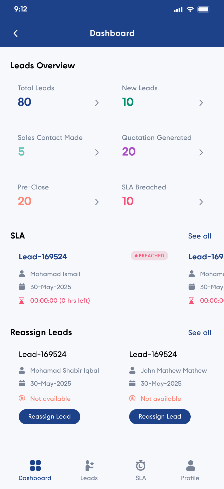
The executive's screen opens with work; the manager's opens with risk
The executive lands on a New Leads row — actual leads, with their countdowns, ready to be picked up. The funnel tiles sit below that, because an executive doesn't need to be told the shape of the funnel before being told what to do next.
The manager and VP land on the six-tile overview — Total, New, Contact Made, Quotation Generated, Pre-Close and SLA Breached — then an SLA row of breached leads, then leads needing reassignment. Their job starts with the aggregate and drills into exceptions.
Same card component, same tile component, inverted priority. Hierarchy of information is the feature; the components are just the vocabulary.
A tab bar that encodes authority
Executives get three tabs: Dashboard, Leads, Profile. Managers and VPs get four — the extra one is SLA, a dedicated destination for breached leads with its own filter.
An executive already sees the clock on every one of their own leads; a standing list of breaches would be a list of their own failures. For a manager it's the primary instrument. Same data, different level, and only one of them gets a tab for it.
The two lists are organised on different axes
This is the decision I'd defend hardest in the whole product, and it's easy to miss.
| Role | Leads list tabs |
|---|---|
| Sales Executive | New · Contact Made · Quoted · Closed — the pipeline stage |
| Manager / VP | All · Critical · Warning · Safe — the SLA severity |
An executive asks what stage is this deal at, and what do I do next? A manager asks what is about to go wrong, and who do I call? Those are different questions, and answering both with one tab set would have served neither.
It costs a second list configuration to build. It buys a product where nobody has to filter their way to their own job.
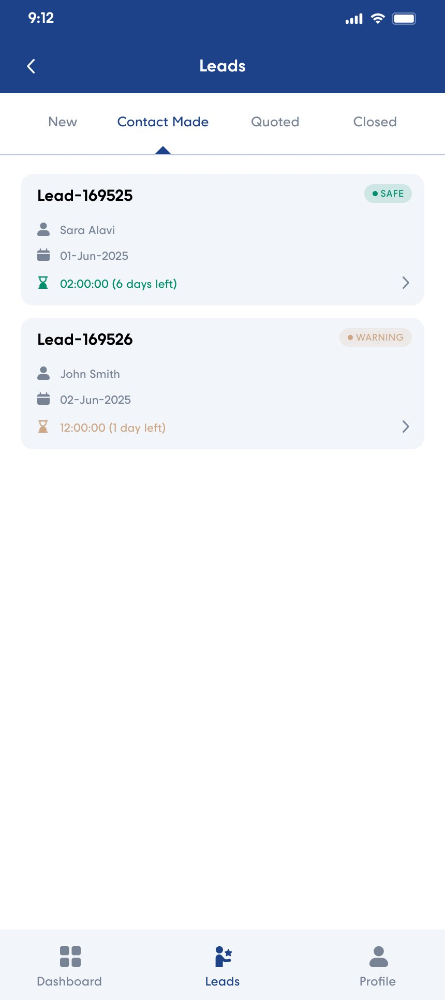
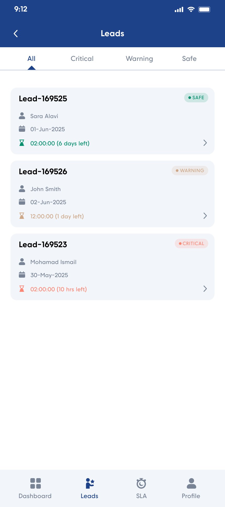
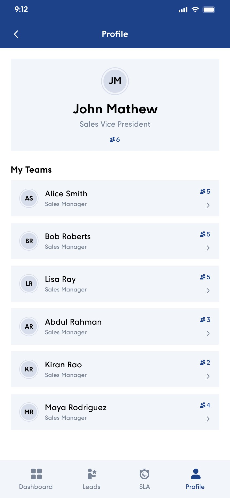
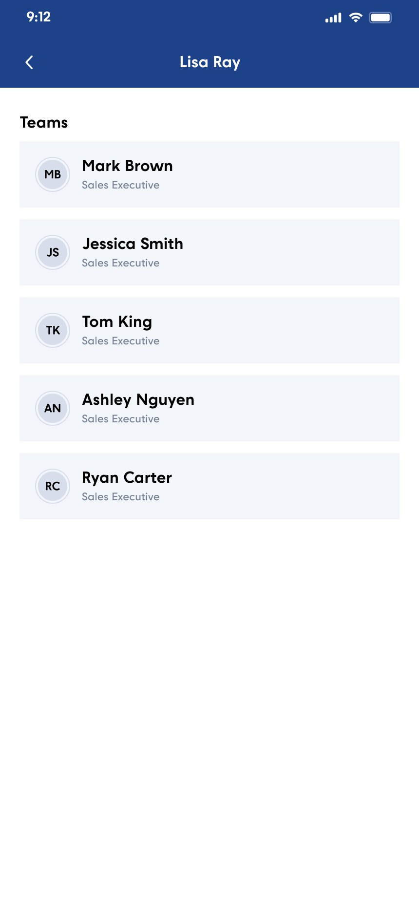
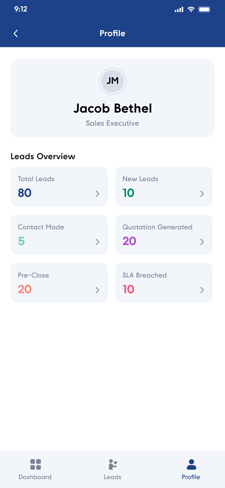
Putting the hierarchy in Profile rather than in a separate "Team" section was deliberate. A manager's org chart is their account — who reports to them is the single fact that determines what the rest of the app shows them. The headcount badge on each row does quiet work too: it's the closest thing to a workload signal available before you tap in.
Deep dive — 02. The SLA clock
A countdown on every lead, in four colours
The mechanism that carries the whole product. Every lead card, in every list, for every role, shows how long is left before the response deadline is missed.
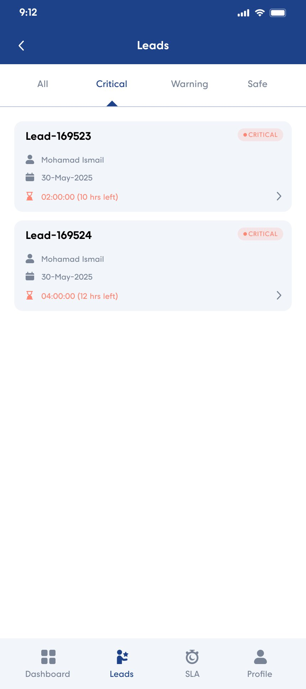
The countdown is written twice, on purpose
Each card carries a precise timer and a plain-language remainder — the ticking figure beside something like "3 days left" or "10 hrs left".
The timer is for the person who needs to know exactly. The plain-language version is for everyone scanning a list, because nobody converts a hours-minutes-seconds string into urgency at a glance. Written twice, the card answers both the scan and the stare.
The hourglass icon takes the tier colour as well, so the row reads as urgent even for someone who can't reliably separate the tan pill from the coral one.
Why four tiers and not a simple late/not-late
Two states would have been cheaper to build and nearly useless. "Not late" covers a lead with six days left and one with ninety minutes left, and those demand completely different behaviour.
Four tiers give the manager a graduated instrument: Safe is inventory, Warning is a nudge, Critical is a call, Breached is a conversation with a person rather than a lead. The tab set exposes exactly that — you can pull up only the tier you have time to act on.
And because the tier is derived from the clock rather than set by hand, nobody can mark their own lead as fine. That's the part a spreadsheet or a CRM field could never enforce.
Deep dive — 03. Distribution
Moving a lead off someone who can't work it
The brief named this twice: stand leads were hard to distribute, and managers struggled to assign them. Reassignment is the answer to the second half.
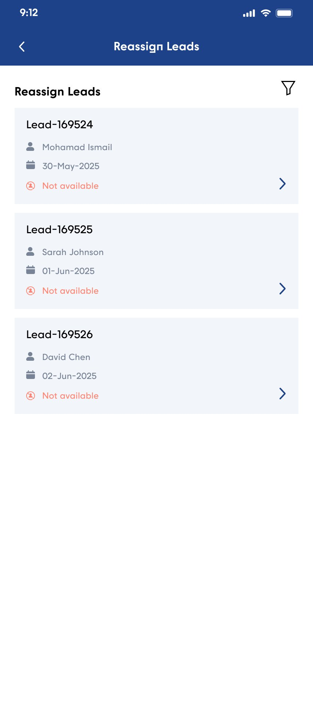
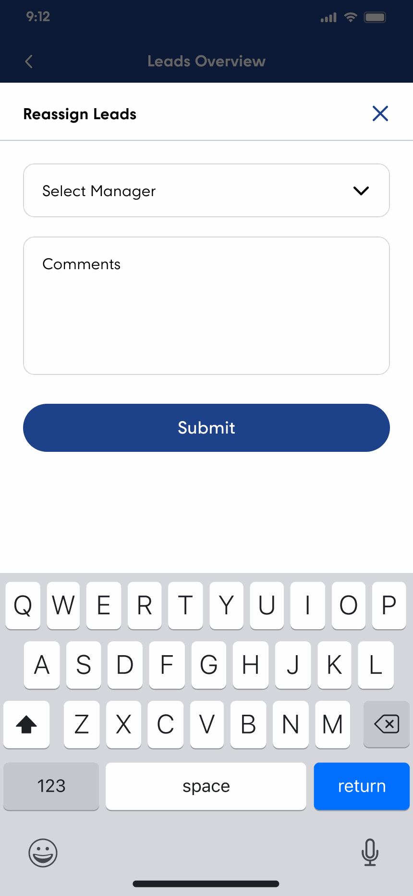
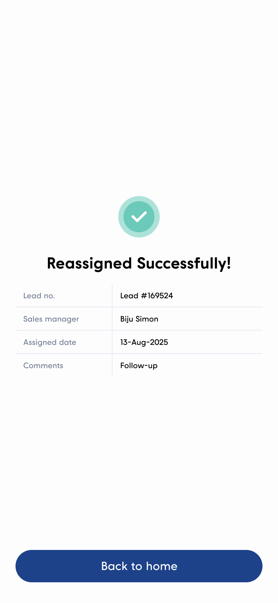
"Not available" is the trigger, and it's on the card
Leads needing reassignment aren't found by searching. They're flagged Not available in coral, with a person-crossed-out icon, and pushed onto the manager's dashboard with a Reassign Lead button already on the card.
That's the difference between a tool that reports a problem and one that fixes it. The dashboard row is not a notification that something needs doing elsewhere — the action is in the same rectangle as the information.
A "See all" link opens the complete list with its own filter, for a manager doing a deliberate sweep rather than reacting.
Reassignment is two fields, and one of them is prose
Deep dive — 04. The assignment queue
The mechanism that distributes stand leads
And the most consequential screen in the app: what happens to an executive who stops keeping up.
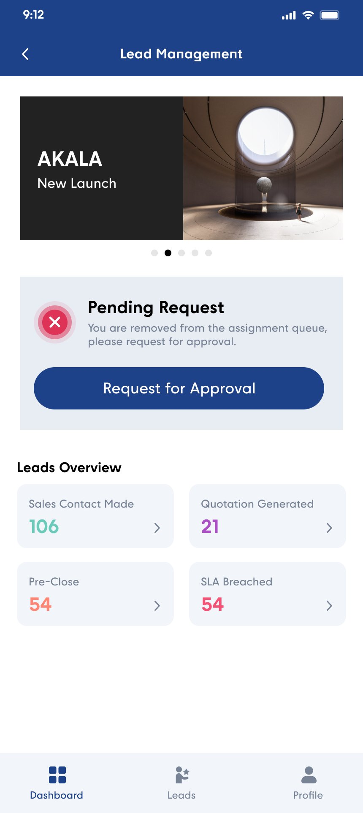
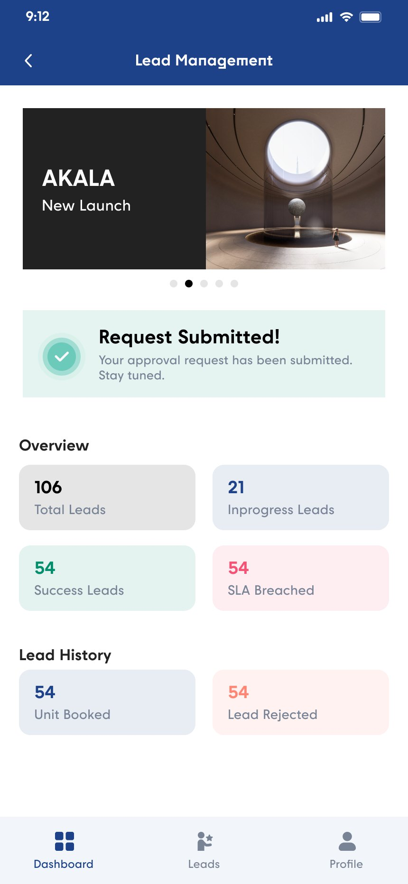
An executive isn't given leads. They're in the queue for them.
This is the answer to "leads collected from the sales stand were difficult to distribute efficiently". Nobody divides the stack. Executives sit in an assignment queue, and new leads flow to them from it.
Which means the queue is also the enforcement mechanism. An executive who isn't keeping up can be removed from it — and the app tells them so, in the first card on their dashboard: "You are removed from the assignment queue, please request for approval."
The consequence is exact and it lands where it hurts: no new leads. Not a warning email, not a figure in a monthly review. The pipeline stops arriving.
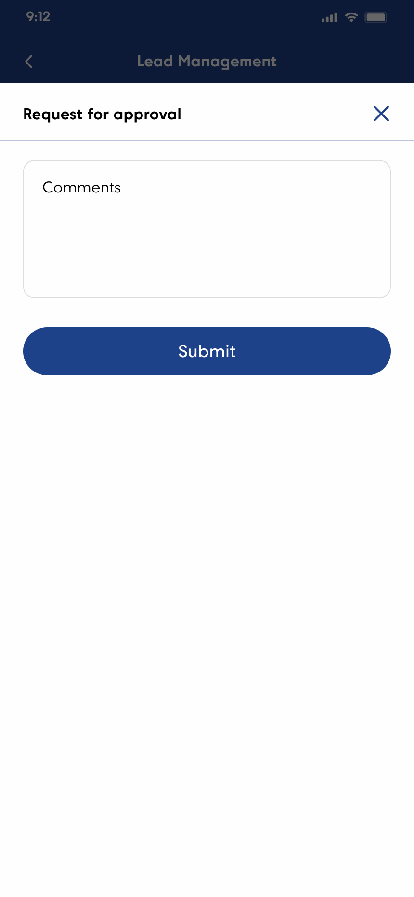
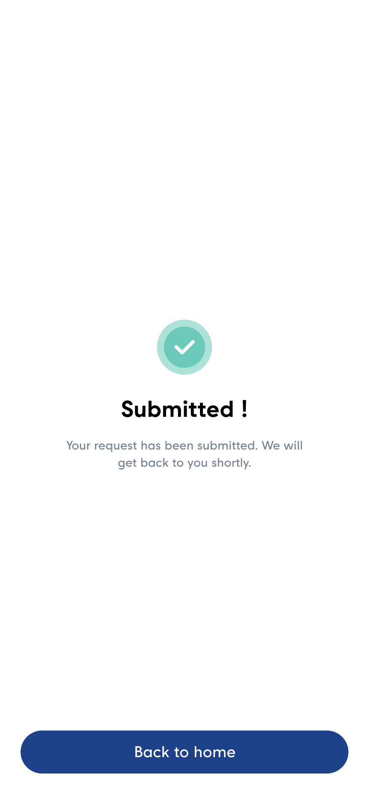
Deep dive — 05. Working a lead
Four tabs from enquiry to booking
The lead's own screen carries its lifecycle: Details, Contact Made, Quotation, Close. The same four words the list uses, so the mental model transfers.
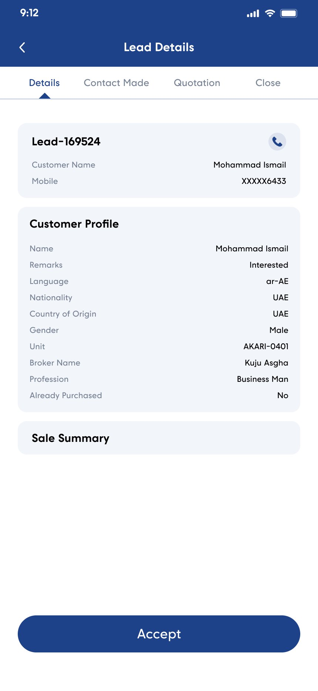
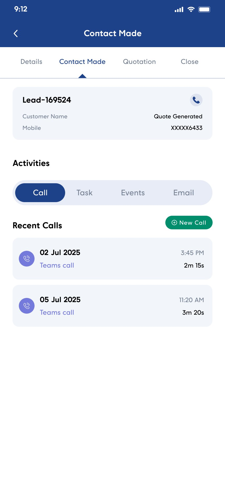
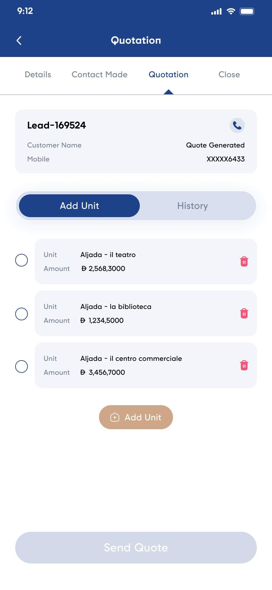
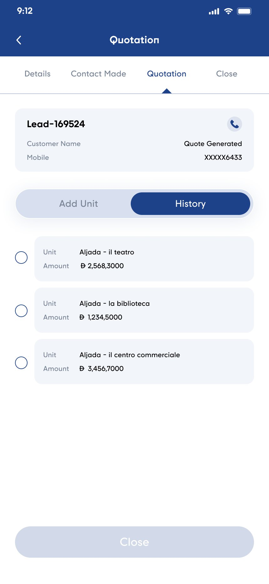
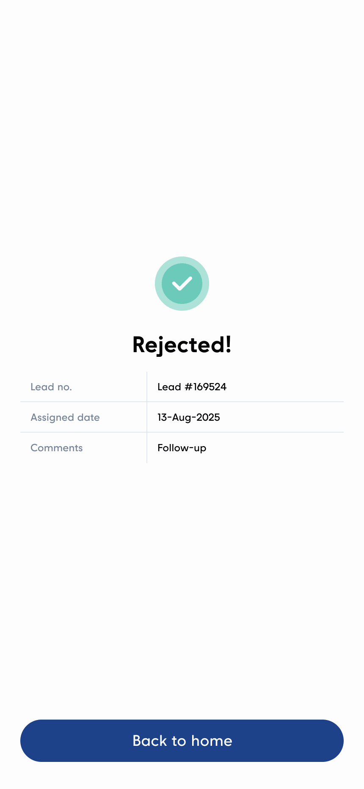
Accept and Reject both exist, and both are recorded
An assigned lead isn't automatically the executive's problem. Details ends in Accept; a separate Reject flow takes a comment and returns a receipt naming the lead and the reason.
Allowing rejection is what makes the SLA fair. If an executive can be measured on a clock they didn't start, they need a legitimate way to say "this isn't mine" — otherwise the honest response to a bad lead is to sit on it until it breaches, which is the worst outcome for everyone.
And a rejection with a stated reason is data about lead quality, not just an escape hatch. It flows back to whoever is capturing enquiries at the stand.
Four activity types, one log
Contact Made holds a segmented control — Call, Task, Events, Email — each with its own list and its own green "New" button. Calls carry a date, a time and a duration, logged against the lead.
This is the part that replaces the email thread. The record of the conversation lives on the lead rather than in one person's mailbox, which is exactly what has to be true before a lead can be reassigned without losing its history.
What the profile chooses to show
The customer profile isn't a contact record. It's the handful of facts that change how you'd open the conversation: Remarks, Language, Nationality, Unit of interest, Broker Name, Profession, and whether they've already purchased.
Language on a lead card is a small thing that matters enormously in the UAE — it decides which executive should really be calling. And "Already Purchased" flags a repeat buyer, who is a fundamentally different conversation from a first-timer.
The mobile number is masked to its last four digits, with a tap-to-call button beside it. The executive can ring the customer without the number being readable over their shoulder on a sales floor — the same restraint the Broker App applies to bank details.
Quotation is a basket, not a form
A buyer rarely wants exactly one unit. The Quotation tab is a selectable list of units with amounts, each removable, with an Add Unit action and a History segment holding what's already been quoted.
Send Quote stays disabled until a unit is actually selected — the same dirty-state discipline as the reassignment and change-request flows. Nothing in this product lets you submit an empty action and then wait on it.
States & details
The screens that decide whether people trust it
A sales tool gets used in short bursts on bad signal. Three states carry more weight than their size suggests.
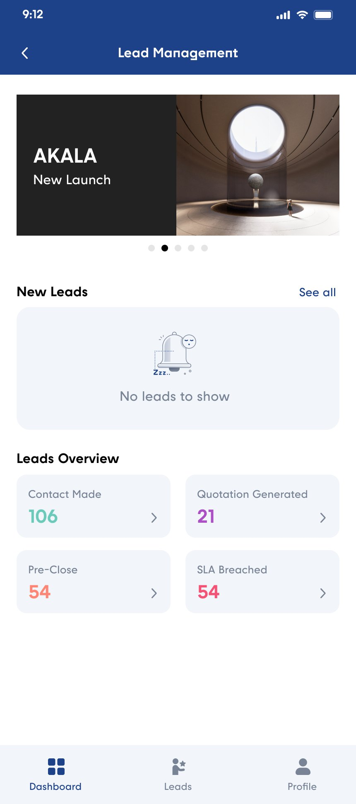
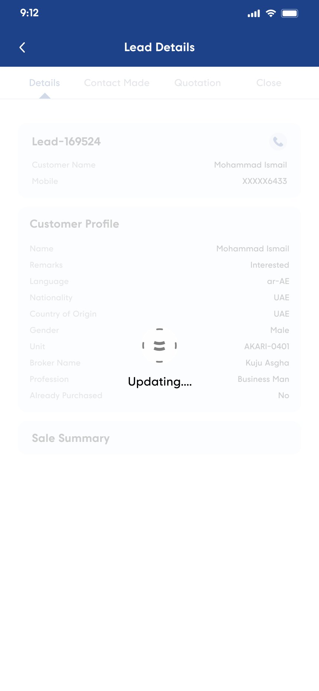
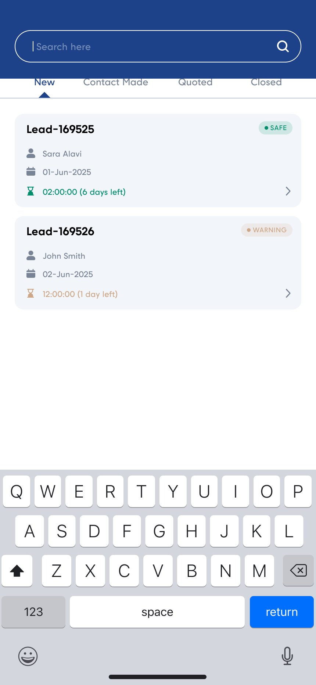
The empty state is the one I'd defend
An executive with no new leads is not in an error condition — they might simply be caught up, or suspended from the queue. So the New Leads row shows a sleeping bell and "No leads to show", while the funnel tiles beneath it stay fully populated.
A wholesale empty screen would have implied something was broken. Emptying only the row that's actually empty keeps the rest of the dashboard doing its job.
Dimming beats blanking
The updating state keeps the previous content on screen, dimmed, behind the brand mark. On a slow connection the executive can still read the customer's name while the refresh lands.
Skeletons and spinners over an empty canvas throw away information the app already had. On a sales floor, where the refresh might take a while, that information is the difference between a usable pause and a dead screen.
Challenges
Where the design had to work harder
Six problems that layout alone couldn't solve.
Outcomes
How the design answers the original problem
Each of the five things the team named maps to a specific mechanism in the shipped product.
Salesforce was costly and not built for this team
Replaced with a product that does five things — receive, assign, work, quote, close — and nothing else. The scope is the saving: no per-seat licence for a platform whose surface area the sales floor never used.
Paperwork and email
The lead record carries its own activity log across calls, tasks, meetings and emails, and every action returns an on-screen receipt. There is no handoff that depends on someone forwarding a thread.
Stand leads were hard to distribute
An assignment queue replaces manual triage. Nobody splits the stack; executives are in the queue and leads flow to them, with removal from the queue as the lever when someone isn't keeping up.
VPs and Managers struggled to assign leads
Leads whose owner is unavailable are flagged on the card, surfaced on the dashboard, and reassigned in two fields with a receipt. The org chart lives in Profile, so the reporting line is always one tap away.
The process was manual and time-consuming
The clock does the chasing. Severity is derived, not entered; breaches get their own tab for managers; and the countdown is on every card in every list, so nothing has to be worked out by hand.
On metrics: no figures are quoted here. Conversion and response-time data for the sales floor sit with Arada's sales leadership, and I'd rather describe what the design does than attach a number I can't source. The verifiable scope — three roles, four severity tiers, five pipeline stages, a hierarchy of one VP over six managers — is above.
Where this goes next
Workload, not just headcount
The manager's team list shows how many people report to them. What it doesn't show is how loaded each of those people is, or how their SLA record looks. A live lead count and breach rate per executive would turn reassignment from a reaction into a decision — the screen is already the right place for it.
Arabic, and the same reason as before
The lead profile captures the customer's language because it changes who should call. The interface itself is English-only. For a tool used by a UAE sales floor talking to Arabic-speaking buyers, right-to-left support is the obvious next investment — and far cheaper designed in than retrofitted through date strips and countdown timers.
Screens
The full set
Every screen referenced above, plus the variants that didn't get their own section. Tap any to open it full size.
Next case study
Arada Broker App
The outside half of the same sales operation: onboarding, verifying and servicing the external brokerages that bring buyers to Arada.